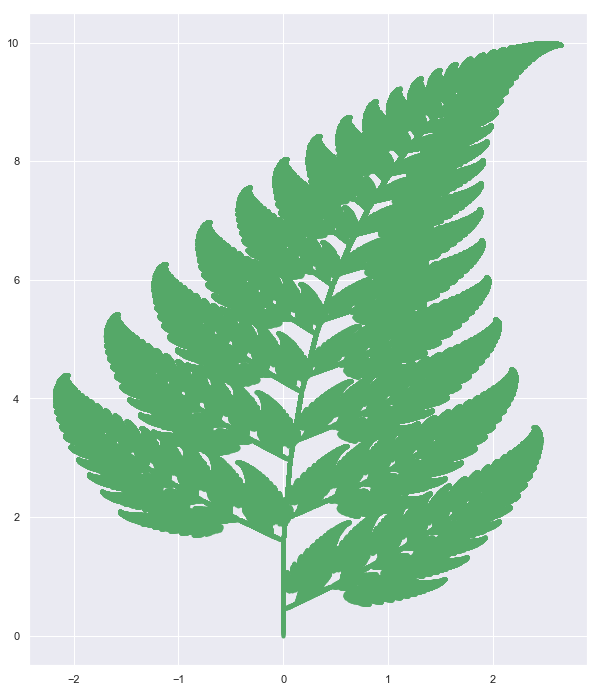
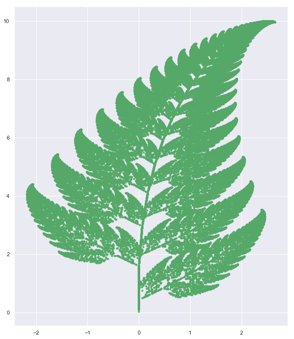
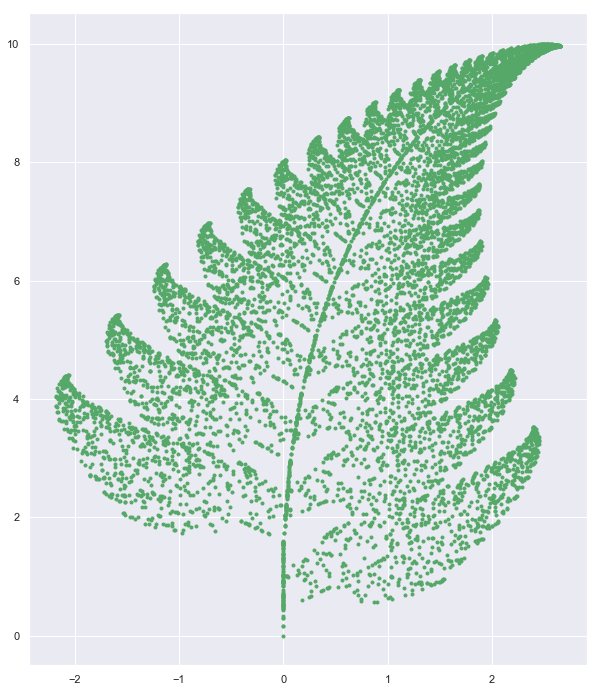

Project: Fern
import numpy as np import json import matplotlib.pyplot as plt import seaborn as sns import random as random %matplotlib inline sns.set()
https://en.wikipedia.org/wiki/Barnsley_fern
Method - 1: Blind implementation
import random as random x = 0 y = 0 X = [x] Y = [y] n=1 isprint = False while n < 1000000: r = random.uniform(0,100) if r < 1.0: x = 0 y = 0.16*Y[n-1] X.append(x) ; Y.append(y) elif r > 1.0 and r < 86.0: x = 0.85*X[n-1] + 0.04*Y[n-1] y = -0.04*X[n-1] + 0.85*Y[n-1]+1.6 X.append(x);Y.append(y) elif r > 86.0 and r < 93.0: x = 0.2*X[n-1] - 0.26*Y[n-1] y = 0.23*X[n-1] + 0.22*Y[n-1] + 1.6 X.append(x);Y.append(y) elif r > 93.0 and r < 100.0: x = -0.15*X[n-1] + 0.28*Y[n-1] y = 0.26*X[n-1] + 0.24*Y[n-1] + 0.44 X.append(x);Y.append(y) if isprint: print("step: ",n,"random number is: ", r, "coordinate is : ", x,y) n = n+1
#for i in range(len(X)): # print(X[i],Y[i])
with open ('data/fern.json', 'w')as f1: json.dump([X,Y],f1)
plt.figure(figsize = [10,12]) plt.scatter(X,Y,color = 'g',marker = '.') plt.savefig('plot/charge-lattice.png') plt.savefig('plot/charge-lattice.pdf') plt.show()

Method-2 : Manual Matrix Multiplication
These correspond to the following transformations:
$ {\displaystyle f_{1}(x,y)={\begin{bmatrix}\ 0.00&\ 0.00\ \0.00&\ 0.16\end{bmatrix}}{\begin{bmatrix}\ x\y\end{bmatrix}}}$
${\displaystyle f_{2}(x,y)={\begin{bmatrix}\ 0.85&\ 0.04\ \-0.04&\ 0.85\end{bmatrix}}{\begin{bmatrix}\ x\y\end{bmatrix}}+{\begin{bmatrix}\ 0.00\1.60\end{bmatrix}}}$
$ {\displaystyle f_{3}(x,y)={\begin{bmatrix}\ 0.20&\ -0.26\ \0.23&\ 0.22\end{bmatrix}}{\begin{bmatrix}\ x\y\end{bmatrix}}+{\begin{bmatrix}\ 0.00\1.60\end{bmatrix}}}$
${\displaystyle f_{4}(x,y)={\begin{bmatrix}\ -0.15&\ 0.28\ \0.26&\ 0.24\end{bmatrix}}{\begin{bmatrix}\ x\y\end{bmatrix}}+{\begin{bmatrix}\ 0.00\0.44\end{bmatrix}}}$
ITR = 100000
x = np.array([[0.0,0.0] for k in range(ITR)]) A = np.array([[0.0,0.0],[0.0,0.16]]) B = np.array([[0.85,0.04],[-0.04,0.85]]) C = np.array([[0.20,-0.26],[0.23,0.22]]) D = np.array([[-0.15,0.28],[0.26,0.24]]) AD = np.array([[0.0,0.0], [0.0,1.6], [0.0,1.6], [0.0,0.44]])
X =[] Y = [] x[0,0] = 0.0 x[0,1] = 0.0 t = 0 while t < ITR: ct = random.uniform(0,100) '''First condition''' if ct < 1.0: for p in range(2): x[t,p] = 0.0 for q in range(2): x[t,p] = x[t,p] + A[p,q]*x[t-1,q] '''second condition''' elif ct > 1.0 and ct < 86.0: for p in range(2): x[t,p] = 0.0 for q in range(2): x[t,p] = x[t,p] + B[p,q]*x[t-1,q] for p in range(2): x[t,p] = x[t,p] + AD[1,p] '''third condition''' elif ct > 86.0 and ct < 93.0: for p in range(2): x[t,p] = 0.0 for q in range(2): x[t,p] = x[t,p] + C[p,q]*x[t-1,q] for p in range(2): x[t,p] = x[t,p] + AD[2,p] '''fourth condition ''' elif ct > 93.0 and ct < 100.0: for p in range(2): x[1,p] = 0.0 for q in range(2): x[t,p] = x[t,p] + D[p,q]*x[t-1,q] for p in range(2): x[t,p] = x[t,p] + AD[3,p] X.append(x[t,0]) Y.append(x[t,1]) t = t +1
plt.figure(figsize = [10,12]) plt.scatter(X,Y,color = 'g',marker = '.') plt.savefig('plot/fern.pdf') plt.show()

Method 3-Numpy
'''Matrices''' A = np.array([[0.0,0.0],[0.0,0.16]]) B = np.array([[0.85,0.04],[-0.04,0.85]]) C = np.array([[0.20,-0.26],[0.23,0.22]]) D = np.array([[-0.15,0.28],[0.26,0.24]]) AD = np.array([[0.0,0.0], [0.0,1.6], [0.0,1.6], [0.0,0.44]])
u = np.array([0,0]) U = [u] n = 1 while n < 10000: '''generate a random number''' r = random.uniform(0,100) '''1rst condition''' if r < 1.0: u = np.dot(A,u) U.append(u) '''second condition''' elif r > 1.0 and r < 86.0: u = np.dot(B,u) + AD[1] U.append(u) '''third condition''' elif r > 86.0 and r < 93.0: u = np.dot(C,u) + AD[2] U.append(u) '''fourth condition''' elif r > 93.0 and r < 100.0: u = np.dot(D,u) + AD[3] U.append(u) '''update n''' n = n+1
plt.figure(figsize = [10,12]) for item in U: plt.scatter(item[0],item[1],color = 'g',marker = '.') plt.show()
